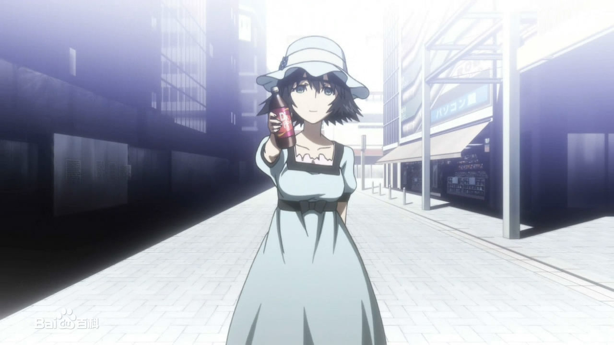

疯狂科学家
著名的中二病。时不时会像很多小孩一样拿出电话假装在和“重要人士”通话，又或者给身边的人起一些莫名其妙的外号。交谈时会突然掏出手机，然后开始莫名其妙的自言自语，并在结束的时候附上“这是Stein Gate的选择”或者“EL PSY CONGROO”。

著名的中二病。时不时会像很多小孩一样拿出电话假装在和“重要人士”通话，又或者给身边的人起一些莫名其妙的外号。交谈时会突然掏出手机，然后开始莫名其妙的自言自语，并在结束的时候附上“这是Stein Gate的选择”或者“EL PSY CONGROO”。
著名的中二病。时不时会像很多小孩一样拿出电话假装在和“重要人士”通话，又或者给身边的人起一些莫名其妙的外号。交谈时会突然掏出手机，然后开始莫名其妙的自言自语，并在结束的时候附上“这是Stein Gate的选择”或者“EL PSY CONGROO”。
著名的中二病。时不时会像很多小孩一样拿出电话假装在和“重要人士”通话，又或者给身边的人起一些莫名其妙的外号。交谈时会突然掏出手机，然后开始莫名其妙的自言自语，并在结束的时候附上“这是Stein Gate的选择”或者“EL PSY CONGROO”。

未来道具研究所的研究员No.004，表面上是冷静而且过分地坚持理论的性格，实际上是个好奇心旺盛喜欢做实验的女孩，成为研究所成员后显现出对研究、改造电话烤箱的热情。
同时也是我老婆
未来道具研究所的研究员No.002，冈部伦太郎的青梅竹马，叫冈部伦太郎“冈伦”，称呼自己“真由氏”(まゆしぃ)并且是冈部的“人质”。